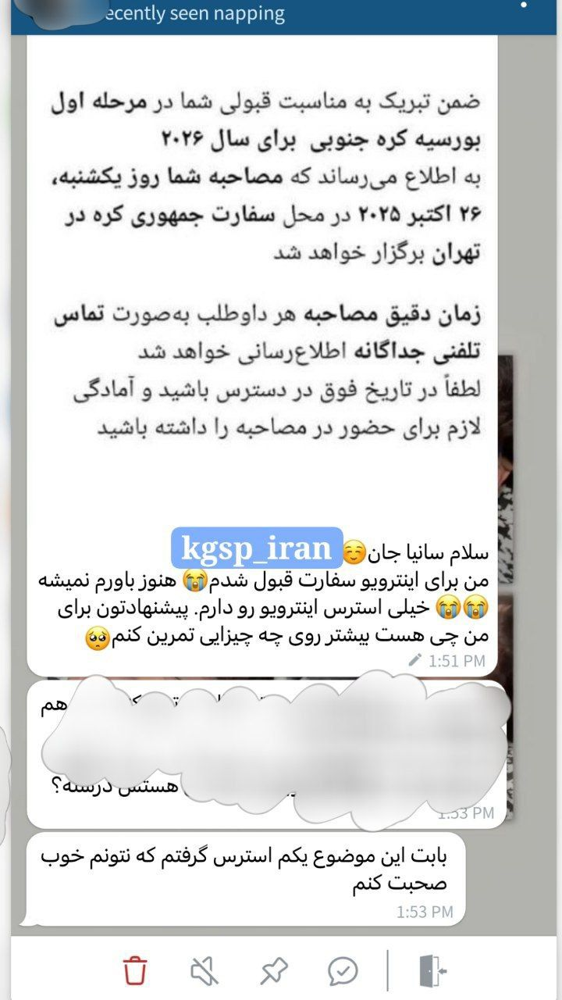

نام دانشجو (Student Name)
مقطع کارشناسی | سال اقدام ۱۴۰۵ — Bachelor's Degree | 2026
بورسیه دولتی کرهجنوبی- مقطع کارشناسی- اقدام از طریق سفارت- پروگرم رجینال

• یکی از نتایج قبولی از مشاورههای امسالم•
با آرزوی موفقیت برای دوست قشنگمون و باقی عزیزانی که قبول شدن و قبولی توی مرحله مصاحبه شون🍓
دوستان درحال حاضر فقط برای مصاحبه قبول شدن، و نتایج نهایی راند اول و ارسال اسامی به NIIED بعد از مصاحبه صورت میگیره و براساس عملکرد دوستانتون در مصاحبه سنجیده میشود. 🫶🏻🪷
🎯 من باقی نتایج مشاورههام چه اقدام از طریق سفارت چه اقدام از طریق دانشگاه مقصد؛ توی مرحله آخر و نهایی با رضایت خود عزیزان معرفی میکنم☺️ خیلی خوشحالم که یکسال دیگه هم به من اعتماد کردین و از من کمک گرفتین.
#gks #gksu2026 #قبولی